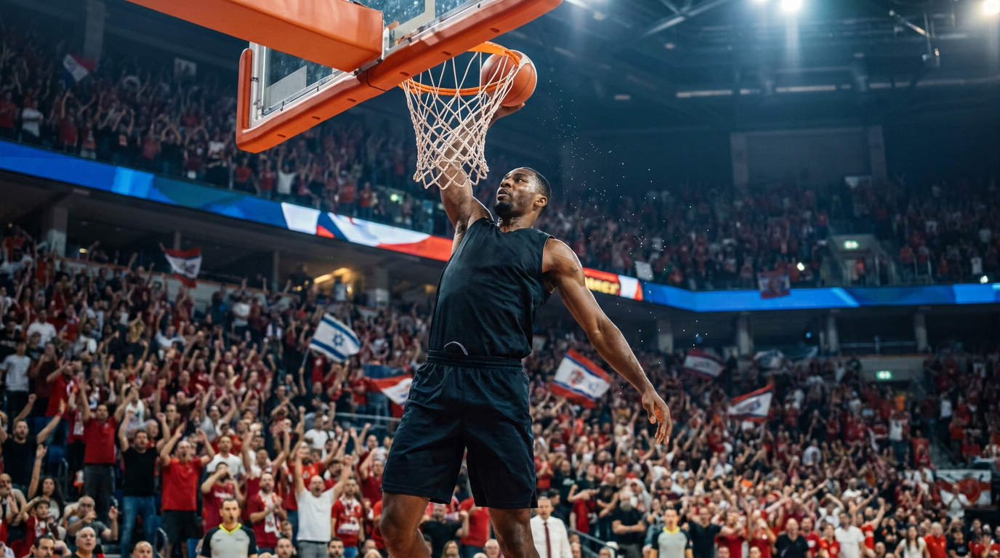

דרמה בירושלים: הפועל לקחה את משחק 2 בחצי הגמר מול ת"א
ערב גדול במלחה: האדומים מהבירה הפכו פיגור של עשר נקודות והשוו את הסדרה 1-1. עכשיו הכל עובר לתל אביב.

צילום: ג'וני ספורט · אילוסטרציה
מלחה רעדה. אחרי משחק ראשון שבו הפועל תל אביב לקחה את היתרון בסדרת חצי הגמר של ליגת העל בכדורסל, הפועל ירושלים החזירה הערב את הכבוד הביתי בערב שבו הקהל היה השחקן השישי. האדומים מהבירה, שפיגרו בעשר נקודות באמצע הרבע השלישי, סגרו את הפער בריצה אדירה והשלימו מהפך מרשים שהשווה את הסדרה 1-1.
רבע שלישי ששינה הכל
ההתחלה לא בישרה טובות לאוהדים הירושלמים. הפועל ת"א, עם מערך הגנה צמוד וזריקות חוץ קטלניות, בנתה יתרון דו-ספרתי שנראה יציב. אבל אז הגיע הרבע השלישי, ועמו השינוי הטקטי שהפך את המשחק: לחץ על כל הפרקט, החלפת קצב, ושורת קליעות רצופות שהציתה את היציע.
המאמן זיהה את הרגע ולא ויתר. הוא קיצר רוטציות, נתן דקות לשחקנים הצעירים שהזריקו אנרגיה, והקבוצה הגיבה. בתוך ארבע דקות הפך הפיגור של עשר נקודות ליתרון ירושלמי, ומלחה כבר לא ישבה על הכיסאות.
הדקות האחרונות: תיאטרון של עצבים
הרבע הרביעי היה מאבק אישי על כל החזקה. השופטים נאלצו לפנות מספר פעמים ל-VAR, כל כדור חוזר הוכרע במלחמה מתחת לסל, והקהל דחף את הקבוצה קדימה בכל נשימה. כשנפלה הזריקה המכרעת מעבר לקשת בדקה האחרונה, מלחה התפוצצה.
'אמרתי לשחקנים שסדרה לא נקבעת במשחק אחד', סיכם המאמן בחיוך עייף אחרי השריקה. 'הראינו אופי, הראינו לב, ועכשיו אנחנו נוסעים לתל אביב לקחת עוד אחד.'
מה הלאה
המשחק השלישי בסדרה ייערך בתל אביב, והכרטיסים אזלו תוך דקות. שתי הקבוצות יודעות שהניצחון הבא עשוי להיות הצעד המכריע לעבר הגמר. דבר אחד ברור — אליפות המדינה בכדורסל עוברת דרך הדרמה הזו, וג'וני ספורט יביא לכם כל רגע ממנה בשידור LIVE.
← חזרה לעמוד הראשי